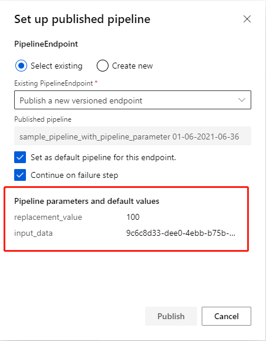

PipelineParameter¶
What is PipelineParameter?¶
PipelineParameter allow user dynamically running pipeline experiments with different inputs and parameters without any code change.
Supported type¶
| Type | Description |
|---|---|
| int | Python built-in numeric type |
| str | Python built-in text sequence type |
| bool | Python built-in truth value testing type |
| float | Python built-in numeric type |
| Dataset | Azureml dataset type like FileDataset |
Use PipelineParameter as component‘s input¶
In the sample pipeline function below, pipeline parameters are:
- input_data - the original dataset
- replacement_value - a string value used to replace missing values
# prepare dataset and component function
# create a FileDataset
titanic_dataset = Dataset.File.from_files('https://dprepdata.blob.core.windows.net/demo/Titanic.csv')
# get 'Clean Missing Data' component function
clean_missing_data_func = Component.load(workspace, name='azureml://Clean Missing Data')
# define a pipeline function with parameter.
@dsl.pipeline(name='sample_pipeline_with_pipeline_parameter',default_compute_target='aml-compute')
def sample_pipeline(input_data, replacement_value):
# clean missing data of our input dataset
clean_missing_data = clean_missing_data_func(
dataset=input_data,
columns_to_be_cleaned='["AllColumns"]',
minimum_missing_value_ratio=0.0,
maximum_missing_value_ratio=1.0,
cleaning_mode='Custom substitution value',
replacement_value=replacement_value,
generate_missing_value_indicator_column=False)
return clean_missing_data.outputs
# create a pipeline instance with input=titanic_dataset and replacement_value='0'
pipeline = sample_pipeline(input_data=titanic_dataset, replacement_value='0')
# submit pipeline run
pipeline.submit()
*Parameters defined by user function decorated with dsl.pipeline() will be transformed into PipelineParameter type. If there are nested pipelines decorators, only the parameters of the outermost user function will be transformed into PipelineParameter.
Open the run link returned by submit() function, you will see the pipeline parameters replacement_value with ‘0‘ and input_data with
a link.

Click the Clean Missing Data component, you can see the input box of parameter replacement_value followed by a
question mark, which indicate a PipelineParameter value has been applied to the component‘s parameter.
Submit with PipelineParameter¶
Submit pipeline with PipelineParameter via Component SDK¶
Submit the pipeline created above with replacement_value values ‘100‘:
# define pipeline parameters with new replacement value
pipeline_parameters = {'replacement_value': '100'}
# submit run with pipeline parameters
pipeline.submit(pipeline_parameters=pipeline_parameters)
The replacement_value display ‘100‘ now and the input_data is same as before.
Resubmit run with PipelineParameter¶
Click the Resubmit button on the pipeline run page, you can set up parameters if the run has PipelineParameter.
Publish run with PipelineParameter¶
PipelineParameter also have effect on pipeline endpoint and you can set them up if submit run with endpoint.
Click Publish button on the pipeline run page, pipeline parameters and default values will be display if there exists.

PipelineEndpoint SDK support will be public available later.